Eka Automation
User Guide & Demo Walkthrough
Use Left/Right arrow keys or swipe to navigate sideways.
Overview
The Eka Automation Application is designed to significantly reduce repetitive engineering workload through intelligent, centralized automation.
- Daily Image Loading — Automated, zero-touch batch processing of VS testing images replacing manual CLI operations.
- Batch Runs — Streamlined execution of multiple test configurations defined via YAML testbeds.
- Advanced Regression Testing:
- Parallel Execution: Run multiple SpyTest scripts simultaneously against discrete topologies.
- Optimized DUT Usage: The system automatically manages Device Under Test (DUT) allocation and prevents resource conflicts.
- Centralized Logging: Real-time streaming and storage of raw execution logs for rapid debugging and RCA.
Dashboard
- Total Devices Dashboard: The central control plane landing page providing an immediate pulse check on your lab infrastructure.

Dashboard: Core Metrics
- 4 Core Metrics:
- Total Devices: Total sum of registered IPs/Hostnames in the application database.
- Online: Result of the live background heartbeat ping checking node reachability.
- Scripts: Total test case scripts discovered from the connected Git Spytest repositories.
- Executions: Lifelong test runs triggered through the platform.
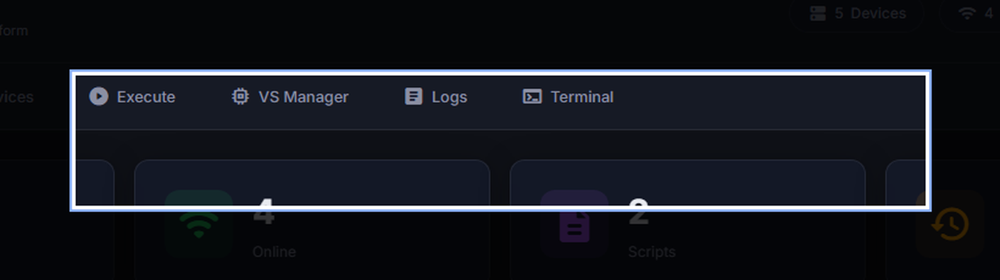
Devices
- Manage the entire testing infrastructure inventory from this single pane of glass.

Devices: Provisioning
Adding a New Device:
- This top section handles the secure ingestion of new testbed members into the database.
- Name / IP / Port:
- The system requires a unique
Device Namestring. - The
IP Addresswill be aggressively validated. - Important: The
Portfield auto-defaults to22(Standard SSH). You should explicitly override this for custom reverse proxy routing.
- The system requires a unique
- Credentials: Standard login parameters (defaults to
admin). Passwords are encrypted at rest. - Type Selection Dropdown:
- VM (Host): Crucial! These are simulation servers that run containers. They are treated differently by the engine.
- DUT: Primary test subjects.
- Switch/Router: Secondary infrastructure elements.
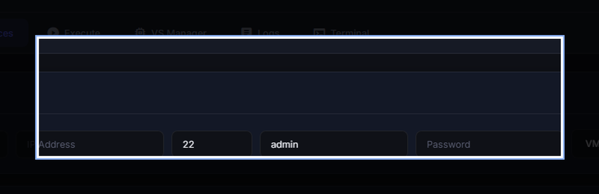
Devices: Management
Inventory & Operations:
- The lower grid provides a comprehensive, filtered layout of the entire mapped lab topology.
- Live Status Checks:
- The
Statuscolumn represents the last known heartbeat. - The Wi-Fi Icon Button under Actions triggers an on-demand, blocking SSH negotiation attempt to definitively prove reachability and auth validity before running tests.
- The
- Decommissioning:
- The Trash Bin Icon instantly purges the device records.
- Warning: Deleting a VM Host that is currently running a background script will forcefully terminate its connections.
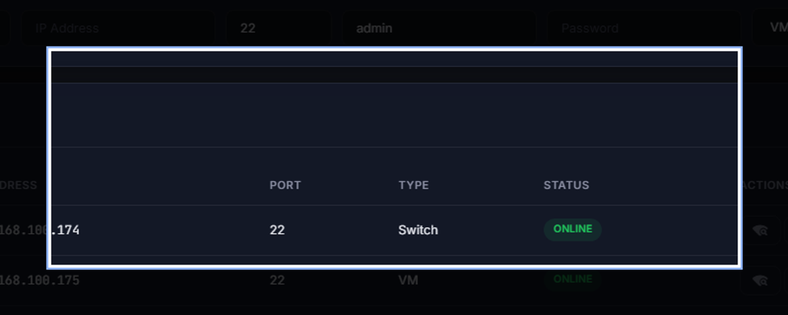
Execution
- The core engine room. Configure, map, and dispatch complex testing pipelines.

Execution: Git Sync
- Step 1: The Context Matrix is the crucial first layer of any execution. You must bind the script to a physical host before proceeding.
- Host Server Selection: The dropdown auto-populates only with devices explicitly tagged with type
"VM (Host)"in the Devices tab. - Git Orchestration Layer:
- Provide the exact
HTTPS Git Clone URLfor the SpyTest repository. - Enter a valid GitHub/Bitbucket Access Token (Classic PAT) instead of an account password.
- Change the target checkout
Branchas needed. - Clicking Pull triggers the backend worker to SSH into the VM, execute git clone/fetch strategies, and index all python scripts on the remote disk.
- Provide the exact
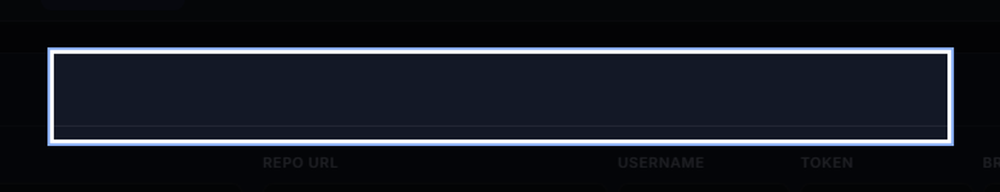
Execution: Topologies
- Step 2: Topology Canvas is the interactive SVG space located in the lower-left pane.
- Dynamic Mapping: Once DUTs are selected, they spawn as draggable interface nodes on the canvas.
- Cable Mode Routing:
- Toggle the
Cable Modebutton to enter linking state. - Click on a source node's port, drag, and drop onto a destination node's port to draw a physical link line.
- This generates the underlying interconnect mapping automatically.
- Use the
Clearsweep button to reset broken maps.
- Toggle the
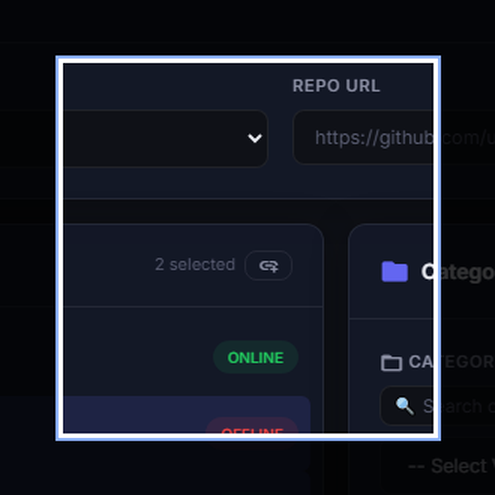
Execution: Target Setup
- Step 3: Script Selection (Center Panel)
- Once Git is synchronized, the
Categorydropdown populates dynamically by parsing the remote file directory trees. - Select a Category to auto-fill the
Test Scriptsmulti-select widget below it. - Check multiple individual Python test scripts to batch them directly into a single massive regression run queue.
- Once Git is synchronized, the
- Step 4: Testbed Definition (Right Panel)
- Select the correct
YAML Testbed filelocated within the VM. - This instructs the SpyTest engine on exactly how to address the hardware layout when the execution triggers.
- Select the correct
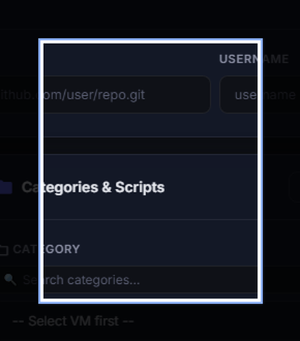
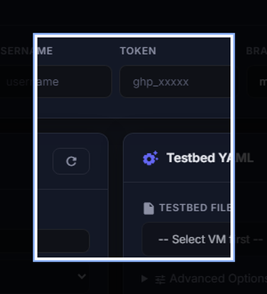
VS Manager
- Automates the painful process of updating firmware images across massive virtual simulation banks.

VS Manager: Update Workflow
- Discovery & Targeting:
- Select a
Host Devicefrom the dropdown. - The app queries the server and spins up a list of all active Virtual Machines detected on that specific Linux host.
- Click the checkboxes next to the specific VMs you want to target for upgrading, enabling parallel processing.
- Select a
- The Update Lifecycle Workflow:
- Paste the exact absolute file path to the fresh
sonic-vs.imgon the server into the input field. - Upon pressing Update, the background worker handles the complicated Linux choreography:
1. Halting/Destroying the VM Instance.
2. Deleting the corrupted/old image volume.
3. Block-copying the new source image payload into the VM namespace.
4. Re-initializing and spinning up the KVM/Docker target securely.
- Paste the exact absolute file path to the fresh
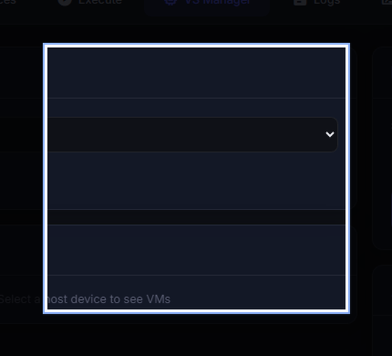
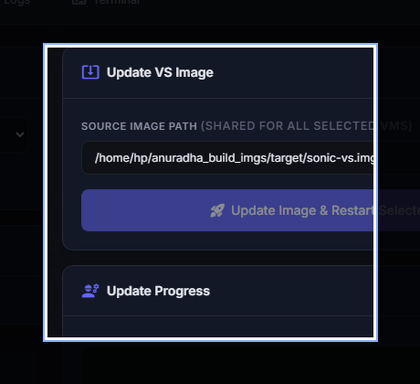
Logs
- The permanent system-of-record for every automated event in the platform.

Logs: Forensic Inspection
- Execution History Matrix:
- A complete chronological grid of execution iterations.
- Tracks total run duration, target devices hit, start/end timestamps, and final pass/fail outcomes.
- Deep Dive Inspection:
- Clicking anywhere on a row instantly queries the backend to pull the raw console output trace for that specific job id.
- Crucial for Engineering RCA (Root Cause Analysis).
- Export Utility: The
Downloadbutton packages the raw text logs into a file to safely attach to external Jira tickets or emails.
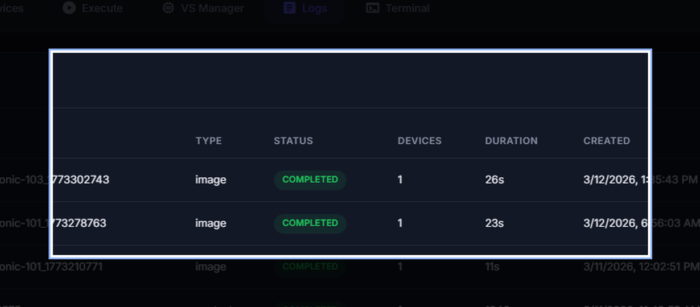
Terminal Integration
- Integrated Remote bash Web CLI bridges the gap without breaking workflow.

Terminal: Direct Dispatch
- Direct Routing:
- Instead of alt-tabbing to PuTTY or native CMD, select the target device from the dropdown.
- The system brokers a direct SSH tunnel asynchronously on your behalf.
- Command Dispatch:
- Type raw shell statements (e.g.
ifconfig,show run,cat /var/log/syslog). - The stdout pipeline returns near instantaneous results directly into the black web console frame.
- Allows engineers to rapidly verify physical switch states before triggering a 2-hour software execution run.
- Type raw shell statements (e.g.
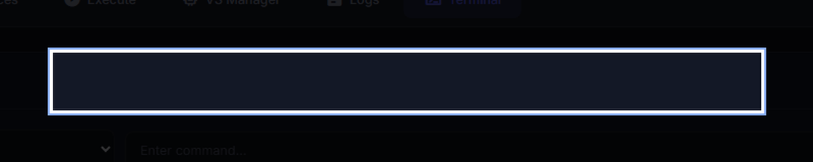
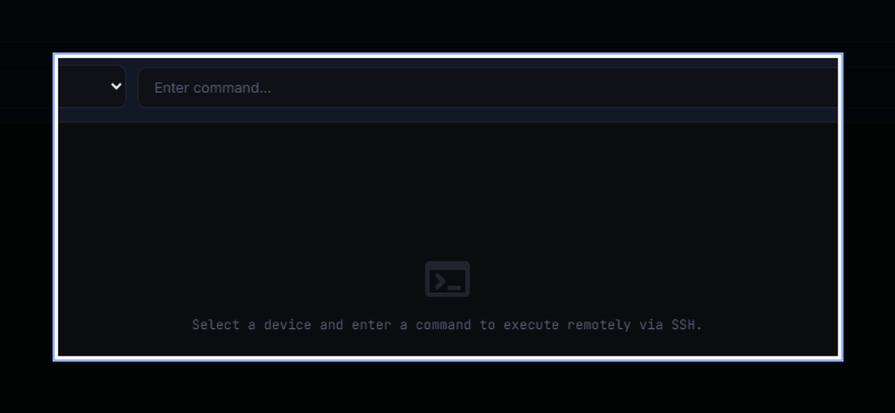
Thank You!
Ready for Automation Execution